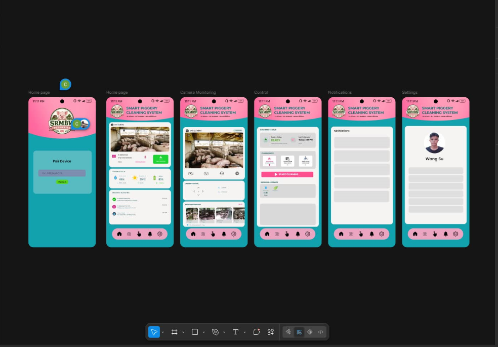
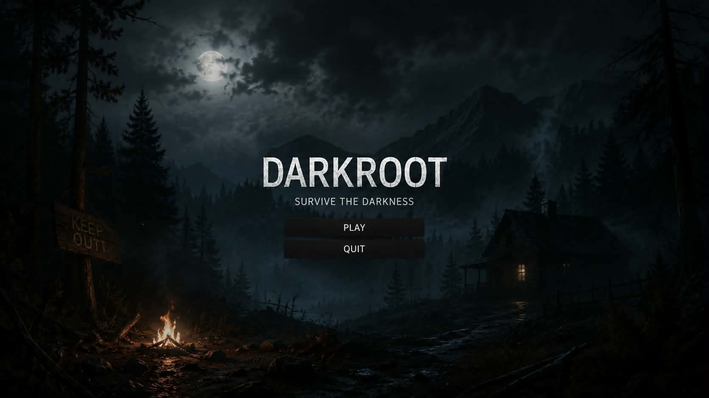
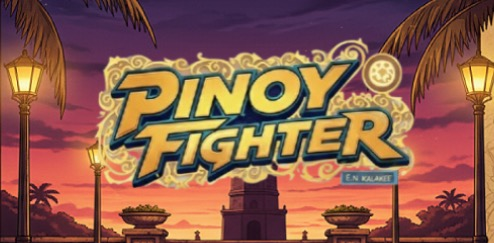

TECH_01
Web Development
Creating structured web pages and responsive layouts.
FOUNDATION
INFORMATION TECHNOLOGY STUDENT
Hi, I'm Jonathan Cañete, an Information Technology student who enjoys learning about computers, networking, and app and web development. I'm continuously improving my skills through school activities, team projects, and hands-on experience.
➜ whoami
IT Student / Problem Solver
➜ cat interests.txt
Networking
Web Development
Systems & Security
➜ git status
● Learning in progress
➜
01 / ABOUT ME
I am a fourth-year Information Technology student at Cebu Eastern College. I am learning about computer systems, networking, and web development through my studies and projects. I enjoy working with my classmates, solving technical problems, and gaining new skills. This portfolio showcases the projects I have worked on, the things I have learned, and my progress as an IT student.
This portfolio is a record of my progress. It will grow as I complete class activities, practice new tools, and turn ideas into working projects.
02 / TECH STACK
Creating structured web pages and responsive layouts.
Learning device connections, IP addressing, and network basics.
Designing web and mobile app interfaces, creating wireframes, and building prototypes for user-friendly applications and.
Organizing code, editing files, and tracking project changes.
03 / PROJECTS

This project was developed as part of our Information Technology coursework. It demonstrates our ability to plan and develop a capstone website using web technologies, organize content, and create a user-friendly interface. Working on this project also helped us improve our teamwork, problem-solving, and web development skills.
My contribution: As the Project Manager, coordinating team tasks, monitoring project progress, and helping ensure that project objectives were met. I also contributed to designing the mobile application interface in Figma, including the home page, camera monitoring, cleaning controls, notifications, and settings.
Contact me about this project ↗
DARKROOT is a dark-themed survival game project set in a mysterious forest. The game features an atmospheric environment designed to create suspense and give players a sense of danger as they explore the darkness. This project demonstrates our creativity and application of game design and development concepts.
My contribution: As the Audio Designer, responsible for selecting and designing sound effects and background audio to create a dark, mysterious, and suspenseful atmosphere. I helped enhance the player's experience through audio that matches the game's environment and survival theme.
Contact me about this project ↗
Pinoy Fighter is a Filipino-themed fighting game developed as part of our third-year project. It features a visual style inspired by Filipino culture and local surroundings. This project allowed our team to apply game development concepts, create game visuals, and explore the process of building an interactive gaming experience.
My contribution: Collaborated with my team in developing Pinoy Fighter and I participated in the creative process, shared ideas, and helped with project tasks to contribute to the game's overall development. Through this project, I gained experience in teamwork, problem-solving, and game development.
Contact me about this project ↗04 / CONTACT
Have a question, a project idea, or an opportunity to learn together? Feel free to reach out.